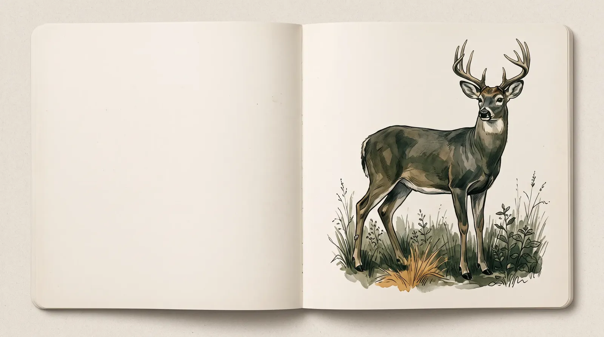
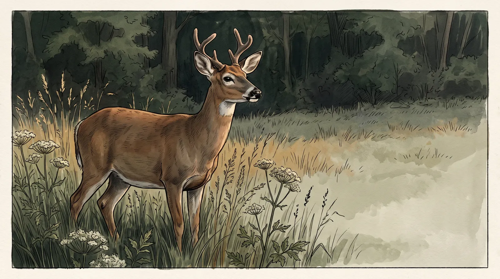
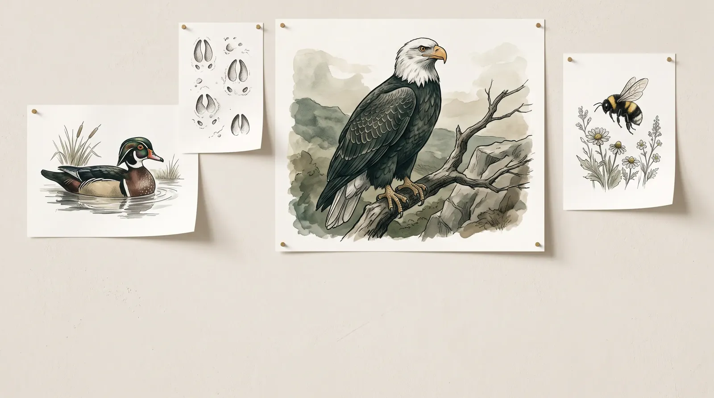

Your land. Your record.
Any US address works: a farm, a hunting lease, forty acres you are considering. The lookup above is the same engine brokers get, running free, right here.
How a dossier is actually made.
Not a diagram. This is the production log of dossier 0e5ad70c, generated for a real Wood County parcel on August 29, 2026. Scroll replays it, stage by stage, with the real measured durations. Nothing about the process is hidden, because the process is the credibility.
Every number in a WildDeed dossier traces to a named source: occurrence records from GBIF, conservation status from the IUCN Red List, geocoding from the US Census. The narrative is written by an LLM and then validated line by line against the data, so invented species never survive to the PDF.
What 518 species
looks like.
One parcel. Eight kilometres. Fifteen years of public records, distilled into a field guide that reads like a naturalist wrote it, because one did.





Built on sources you can check.
WildDeed queries GBIF, the Global Biodiversity Information Facility: over two billion occurrence records from museums, citizen scientists, and field surveys. Conservation status comes from the IUCN Red List. Geocoding comes from the US Census Bureau.
Every dossier states its limits on its face: this is a records synthesis, not a biological survey. Absence of a species in the data is not proof of absence on the land. That honesty is why brokers put their name on it.